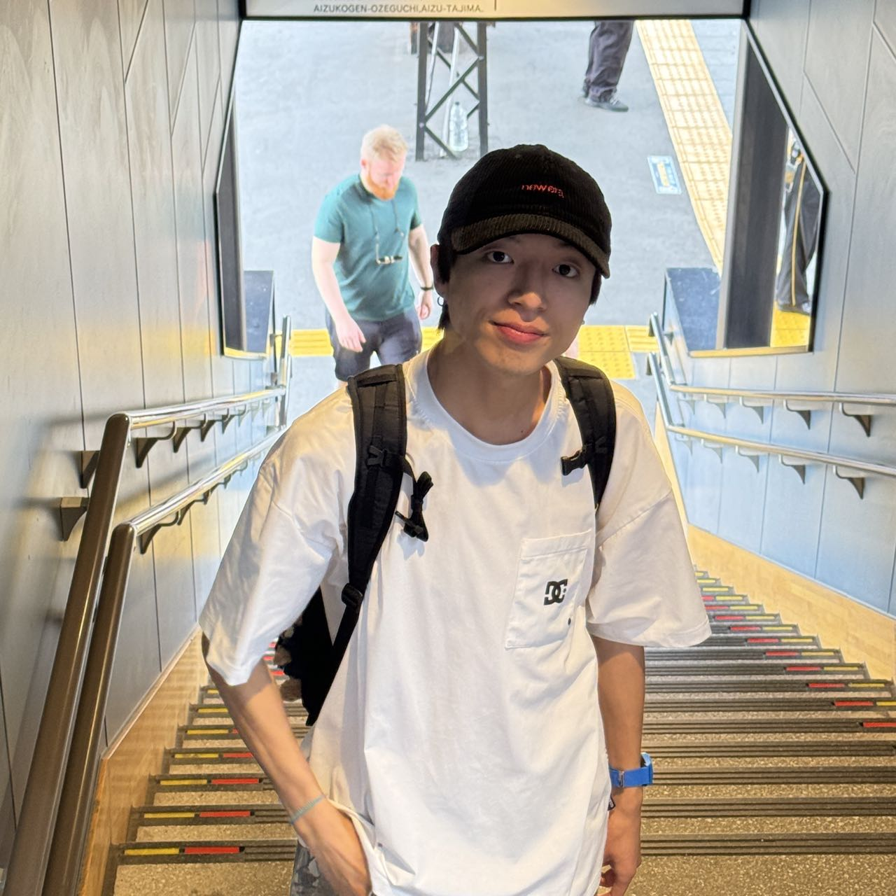

About Me
Hokkaido University
I am from Guizhou Province, China. I studied Digital Media Technology as an undergraduate in Tianjin and graduated from the University of Aizu in 2026, where I belonged to the Signal Processing Laboratory. I am now a first-year PhD candidate (D1) in the Language Media Laboratory at Hokkaido University's Graduate School of Information Science and Technology. My research interests include multi-agent systems, virtual embodied AI, and the safety and ethics of embodied systems.
I previously interned at a television station, where I traveled throughout the city conducting interviews and editing news reports. Through this experience, I became very familiar with the workflow of journalism and media production.
I can also play a variety of musical instruments, including the piano, violin, saxophone, guitar, and harmonica. I have been learning music since childhood, and I believe that emotion in music is more important than technique itself.
Of course, I also love photography. I have traveled to many places across both China and Japan, and wherever I go, I enjoy taking photos to capture the small moments of everyday life.
In addition, I enjoy skateboarding. I have experienced injuries of many kinds through skateboarding, but it was through that pain that I managed to accomplish challenges that once seemed impossible. I was also once a skateboarding instructor.
